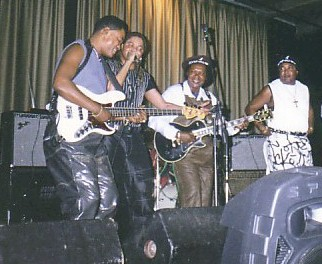

| sounds |
| home page |
|
|  | . All that life has to offer and I only left the house twice. The CruiseA story by Kevin Fanning with pictures and sounds by me, over at a new literary site called Whalelane. Oprah Cancels Book ClubA dialogue at The Morning News. President Bush Merges AgenciesAnother dialogue at The Morning News. |